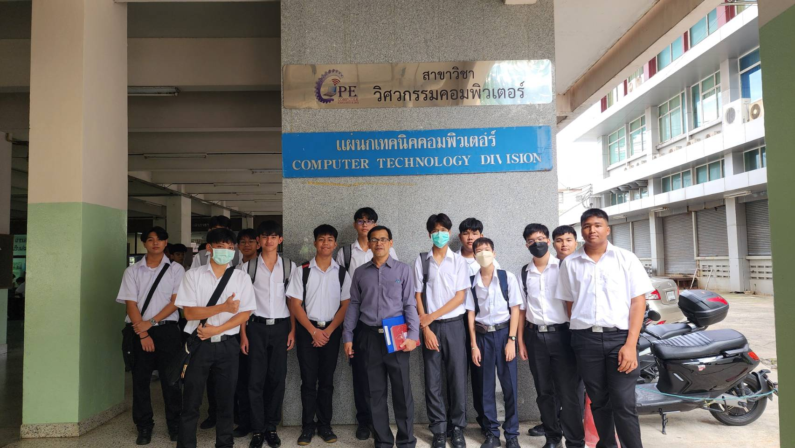

หน้าแรก
เกี่ยวกับสาขาวิชา
หลักสูตร
ห้องปฏิบัติการ
ติดต่อสาขา
ประวัติอย่างย่อ

- สาขาวิศวกรรมคอมพิวเตอร์ก่อตั้งเมื่อปี พ.ศ. 2540
- เป็นหน่วยงานภายใต้คณะวิศวกรรมศาสตร์
- มุ่งผลิตนักเทคนิคด้านคอมพิวเตอร์คุณภาพ
- มีการพัฒนาหลักสูตรอย่างต่อเนื่อง
- เน้นการเรียนรู้ทั้งภาคทฤษฎีและปฏิบัติ